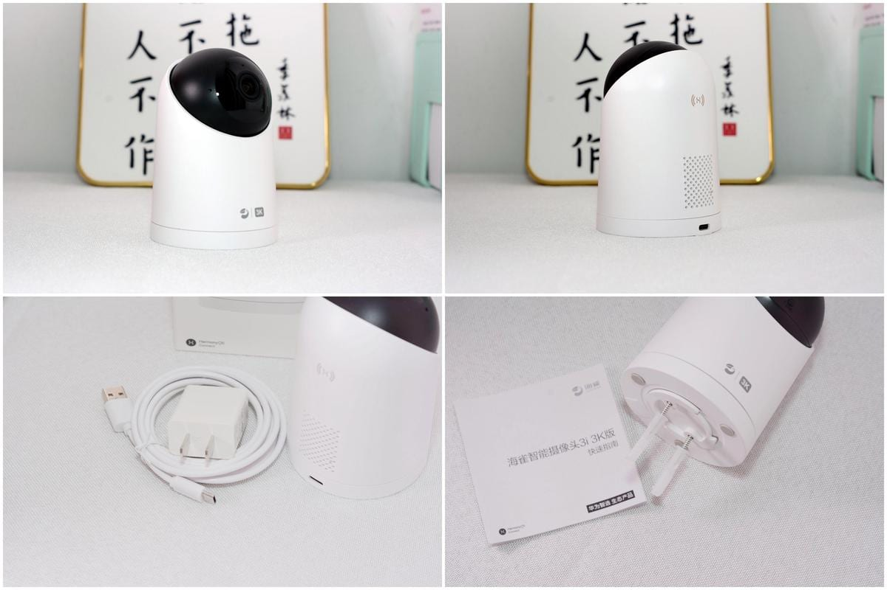

华为海雀智能摄像头 3

华为智选生态的家用云台摄像机，2K 画质配合本地 AI 人形过滤，减少无效报警推送。接入 HarmonyOS Connect 后可与华为设备联动，手机一碰查看画面方便，适合华为生态家庭的基础看家需求。
客观评测
海雀智能摄像头 3 采用约 400 万像素传感器输出 2K 画面，白天满足看家需求，弱光下靠微光全彩与红外维持可用画质。云台支持水平 360° 与约 100° 垂直转动，可覆盖客厅、店铺等场景。特色是本地 AI 人形过滤，端侧判断后再推送，显著降低树叶、光线变化带来的误报。接入 HarmonyOS Connect 后可与华为手机、智慧屏联动。
主观点评
选它是因为家里手机、平板都是华为，配网只要碰一下，App 里看画面也不卡。报警推送比之前用过的杂牌摄像头靠谱得多，风吹窗帘基本不会再半夜吓人一跳。画质属于够用水平，想看清快递单这种细字还是吃力。机身小巧不显眼，装在墙角很低调。预算有限、又在华为生态里，这台是安心又省钱的选择。
优点与不足
- 本地 AI 人形过滤，报警推送准确率较高
- 鸿蒙智联配网与查看体验顺滑
- 价格实惠，功能覆盖日常看家需求
- 2K 画质细节弱于 3K 机型
- 垂直视角偏小，顶部与底部有盲区（约）
参数规格
| 传感器 | 约 1/2.8 英寸 CMOS，约 400 万像素（约） |
|---|---|
| 分辨率 | 2K（约 2560×1440） |
| 夜视 | 红外夜视 + 微光全彩（约） |
| 云台 | 水平 360°、垂直约 100°（约） |
| 存储 | microSD 卡 + 华为云存储（以地区为准） |
| 侦测 | AI 人形侦测、移动侦测、异常声响（约） |
| 本地 AI | 本地人形过滤，减少误报（约） |
| 通话 | 双向语音通话 |
| 连接 | Wi-Fi 2.4GHz，HarmonyOS Connect |
| 供电 | 5V/1A 或 5V/2A 适配器（约） |
| 隐私 | 一键休眠/镜头遮蔽（约） |
| 联动 | 与华为手机、智慧屏等设备联动 |